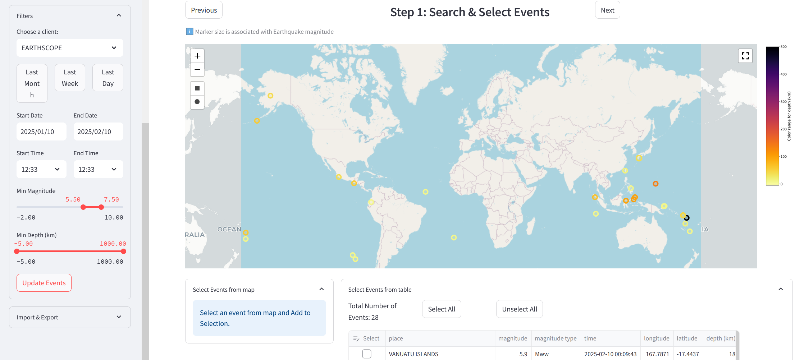

SEED-vault Documentation
Welcome to the SEED-vault documentation. SEED-vault is a cross-platform GUI utility for searching, viewing, and downloading seismic data from FDSN servers.
{kind=link}
Seed Vault is a seismology GUI application that is:
Open Source, built to service the FDSN community
Able to access every kind of seismic data
Designed for expert and novice alike
Features
Download & view earthquake arrival data via a station-to-event or an event-to-station search
Quickly download and archive bulk continuous data, saving your progress along the way
View and plot event arrivals
A CLI scripting tool to automate common jobs
Search, export or import earthquake event catalogs and station metadata
Download restricted/embargoed data by storing auth passwords in local config
Add and connect to custom FDSN servers
Saves all downloaded data as miniseed in a local SDS database to speed up future retrievals
Local database editor
Load and save search parameters and configuration
Can run as a command line application or an unsecured local website
Platforms
Runs on:
Linux
Windows
MacOS
Note
This project is sponsored by AuScope: We provide research tools, data, analytics and support to Australia’s geoscience community. https://www.auscope.org.au/
AuScope is an NCRIS-funded organisation
{kind=link}